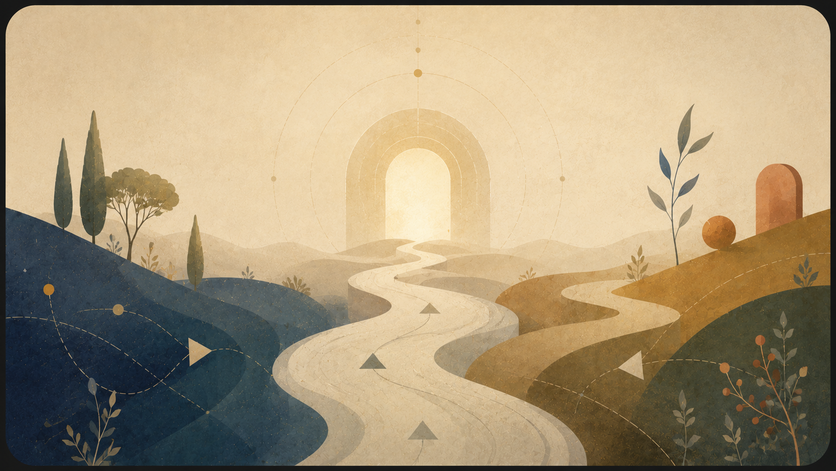

נתיב קריאה מומלץ
הגרסה המהודקת היא שער הכניסה הראשי.

החלק המרכזי של התאוריה: המהלך הפילוסופי, המושגים והגרסה המומלצת לקריאה.

זה העמוד בעברית. מתג השפה מוביל לעמוד המקביל כשהוא קיים; קובצי המקור נשמרים בלי שינוי.
הגרסה המהודקת היא שער הכניסה הראשי.

הגרסה המלאה כוללת את כל הפרקים, הדימויים וההרחבות.
מושגים מדעיים, לוגיים או פיזיקליים נקראים לפי ההקשר: לעיתים כטענה פורמלית, לעיתים כמשל, ולעיתים כשפה מבנית.
לקריאת המתודולוגיה